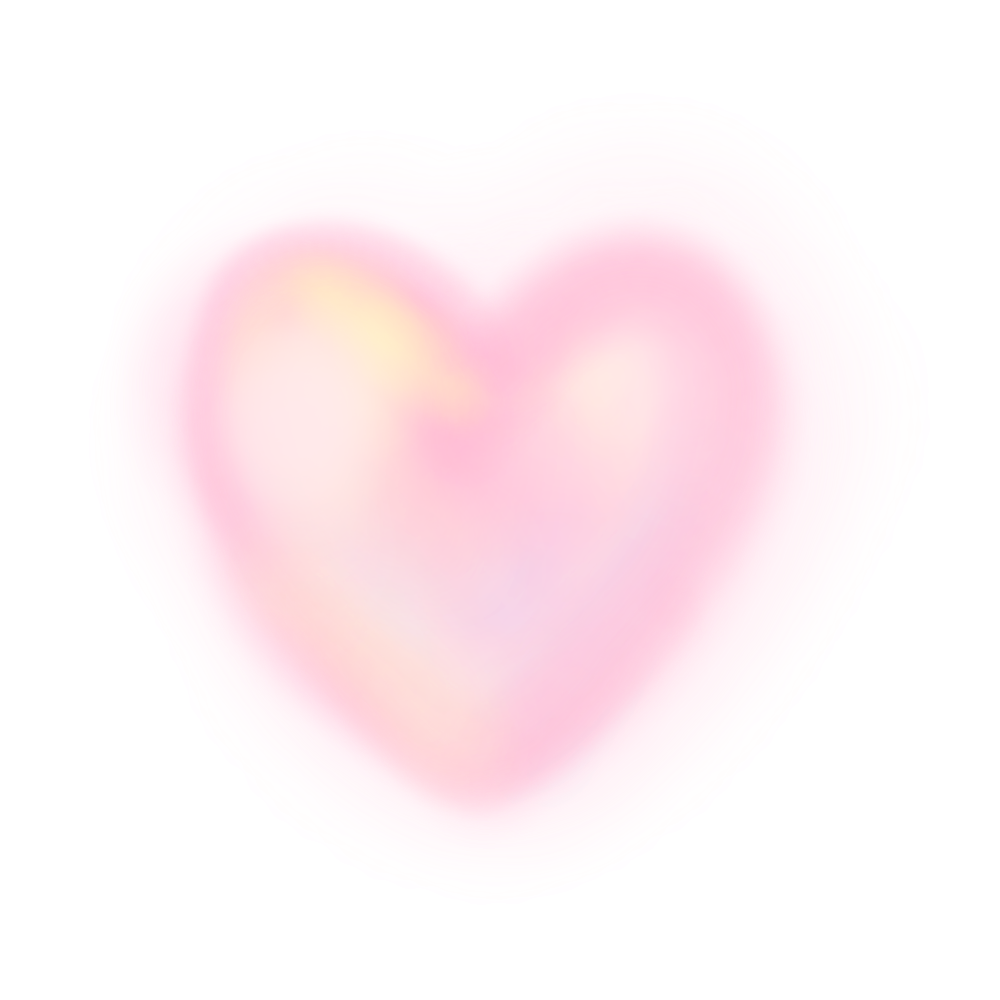
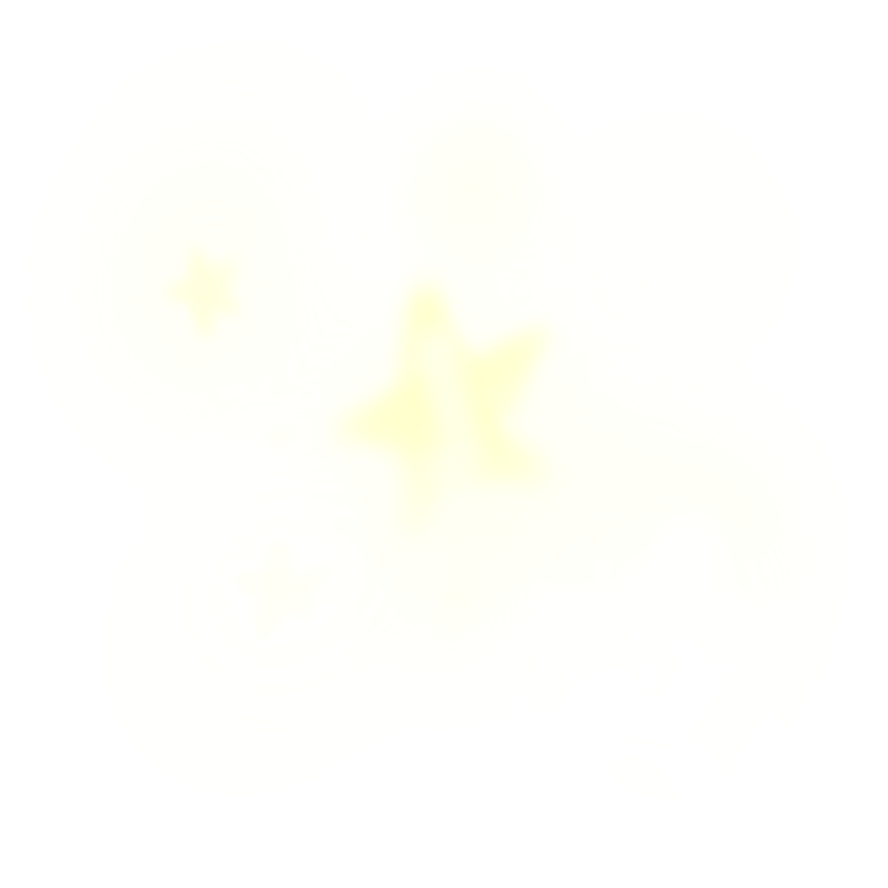
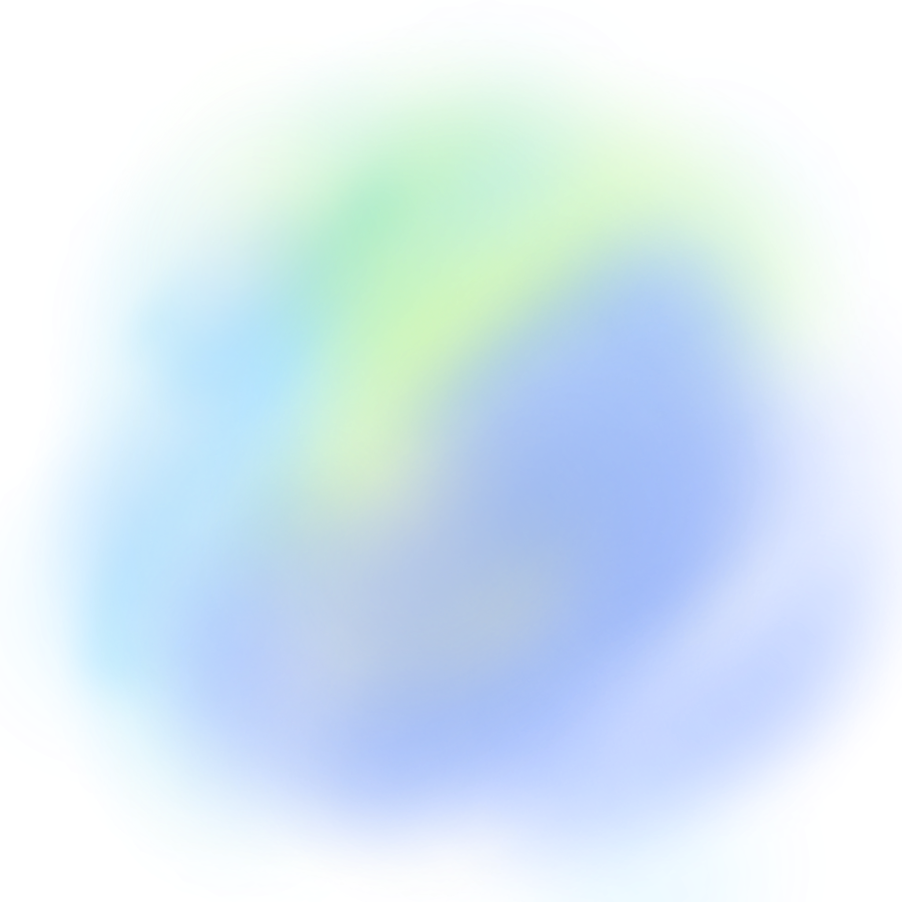
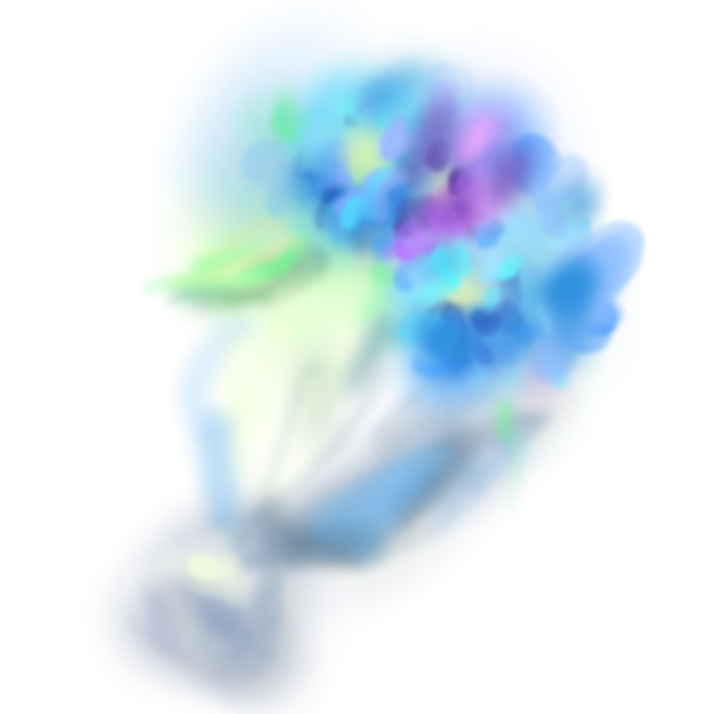
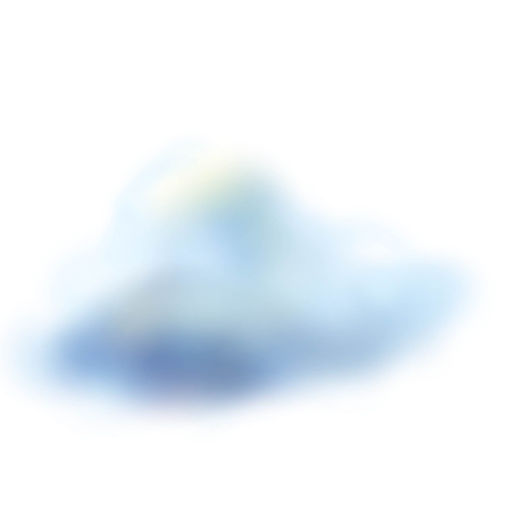
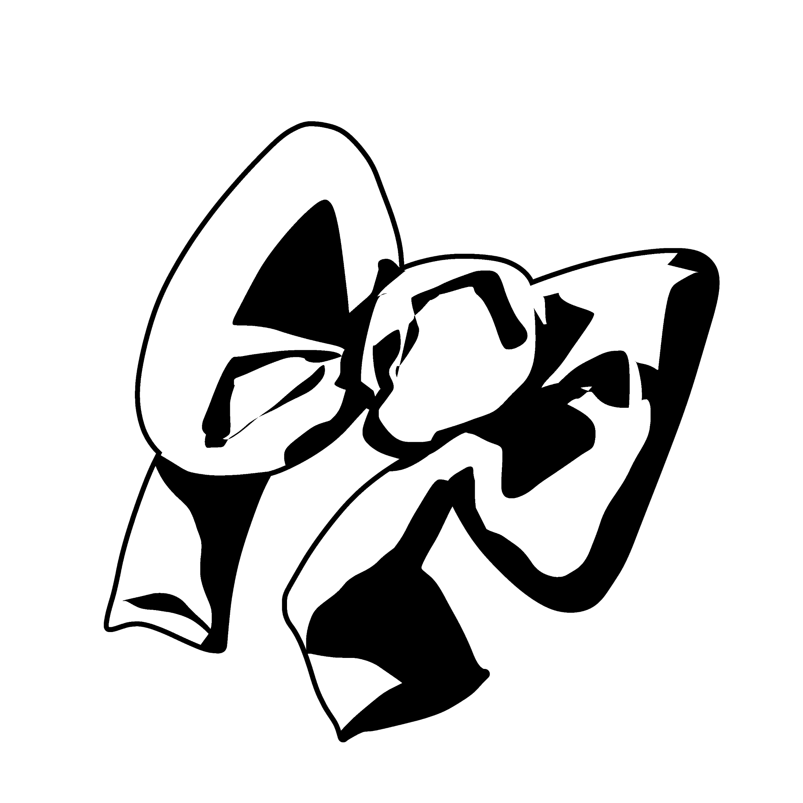
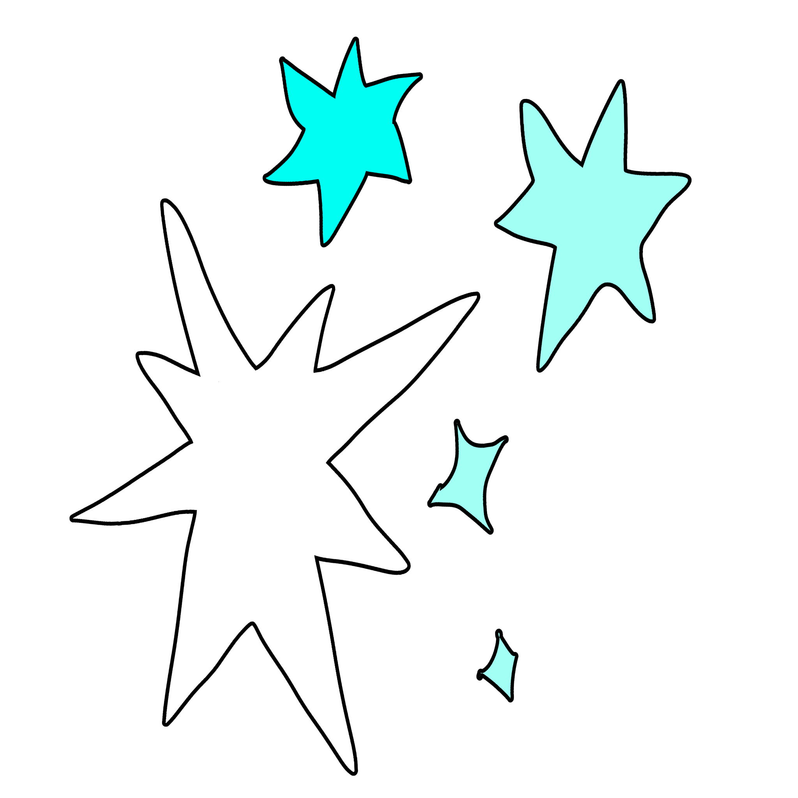
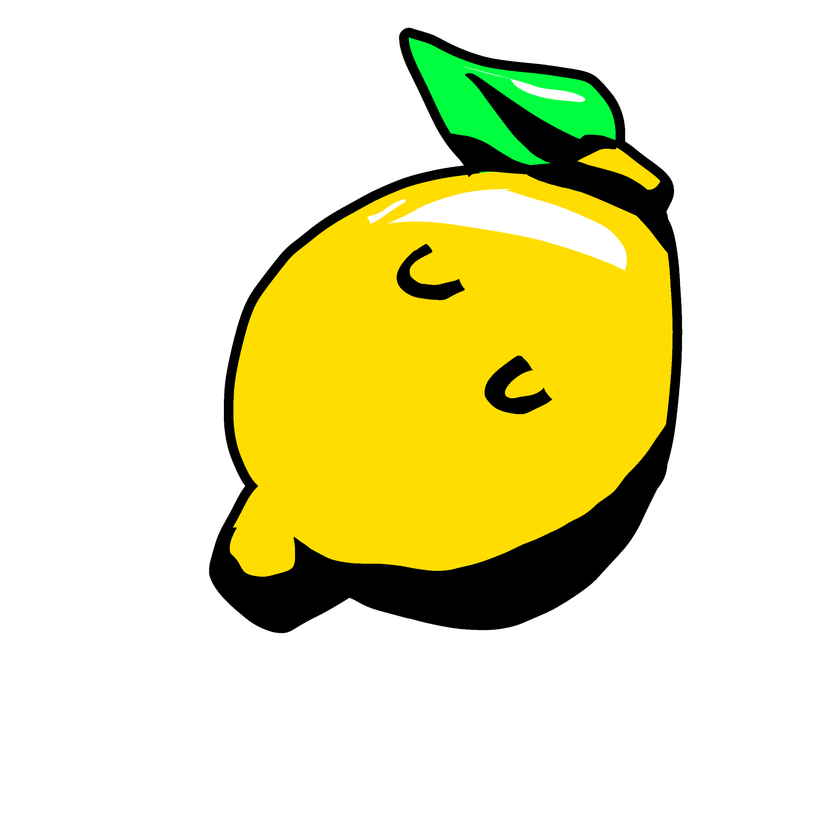
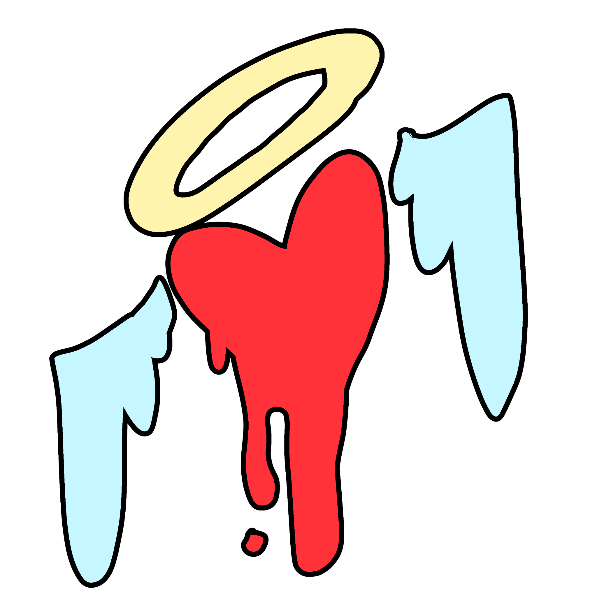
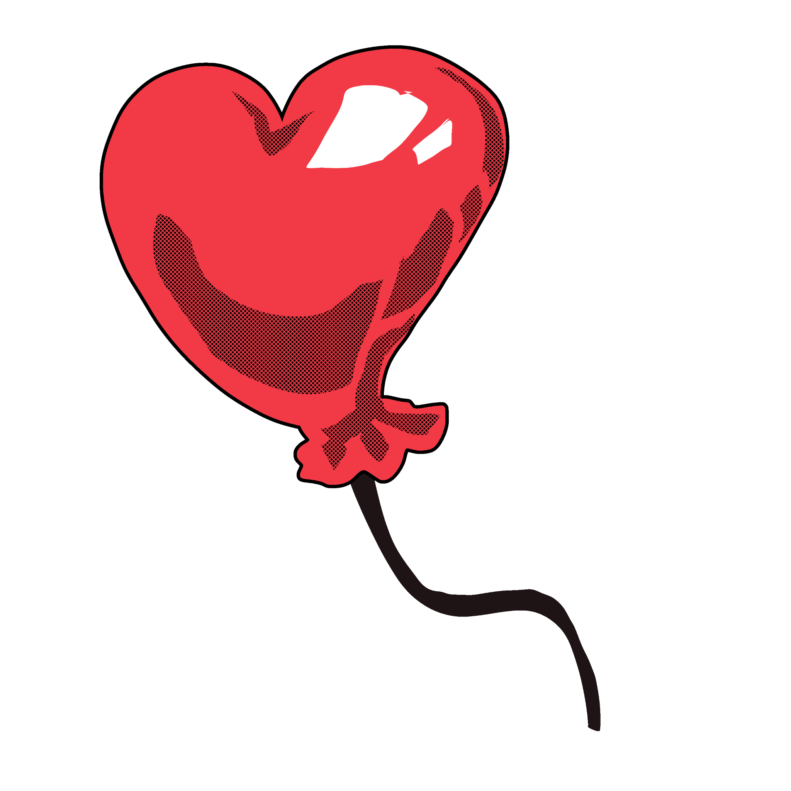

인상주의 · 01분홍빛 하트
시대와 사조가 가진 시각 언어를 이미지로 살펴보는 공간입니다. 같은 ‘이미지’라도 색과 형태, 표현 방식에 따라 전혀 다른 분위기를 만들어냅니다.
빛과 색의 순간적인 인상을 포착한 듯한 부드러운 표현





강렬한 색채와 대중문화의 이미지를 활용한 대담한 표현





원·삼각형·사각형과 기본 색채를 조합한 기하학적 구성